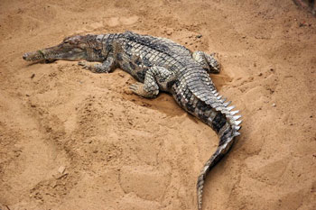
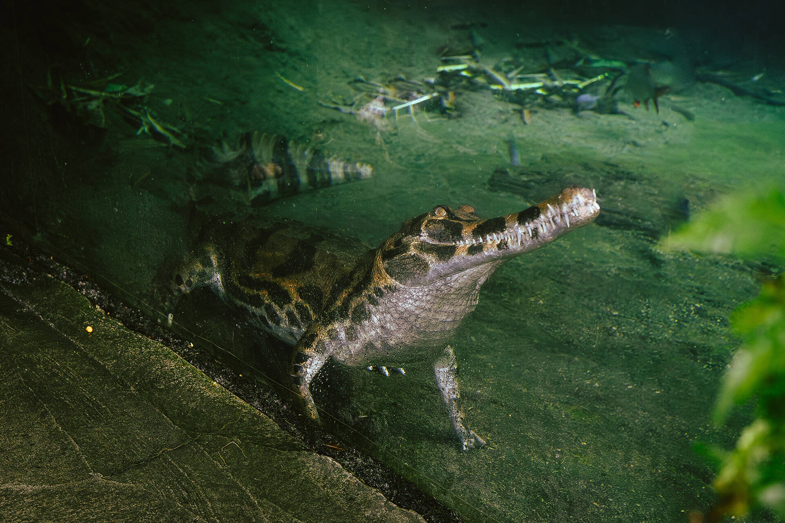
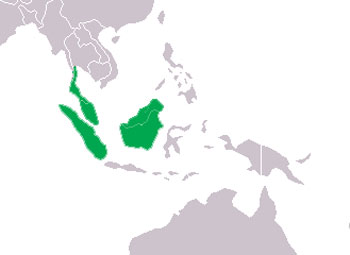

Reproduction
Information about the mating behaviors of the sunda gharial is scarce. From observations, it seems that they begin courtship behavior and nesting during rainy seasons. This happens by males first approaching the female tomistomas in the water and swimming around them. Some cases document both animals hitting each other with their tails, while in others copulation occurs immediately. These are mound-nesting crocodilians and their mounds usually are made on land at the base of a tree near water.
Conservation
The conservation status of these crocodilians according to the IUCN Red List is listed as an endangered species. Regarding population, they are estimated to have between 2,500 and 3,000 mature individuals left. In Java and Thailand, these creatures are locally extinct.

Behavior
The sunda gharial tends to spend most of its time in shallow wallows or mud-holes. They stay submerged, keeping their nostrils and eyes above the water, for around 10-15 minutes or even up to 2 hours at times. There are some cases where the false gharial may occasionally stay in burrows.

Habitat
Native to Peninsular Malaysia, Borneo, and Sumatra.

Average Size: 93kg to 210kg in mass. 4m to 5m in length. Population Status: There is an estimated amount of between 2,500 and 3,000 mature individuals left. Other Names: The Sunda Gharial is also commonly known as the False Gharial, Malaysian Gharial or the tomistoma.
Lifespan: Typically live to be as old as 60-80 years. Diet: Their carnivorous diet consists of a variety of fish, insects, and occasionally small mammals. Clutch Size: A clutch size for these crocodilians is typically 20-30 eggs.